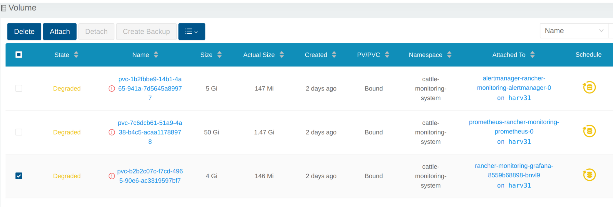
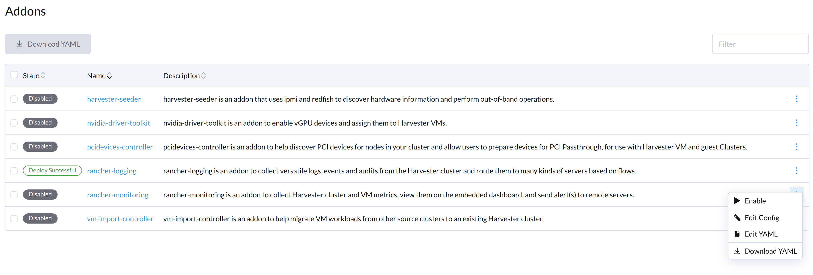

|
Dieses Dokument wurde mithilfe automatisierter maschineller Übersetzungstechnologie übersetzt. Wir bemühen uns um korrekte Übersetzungen, übernehmen jedoch keine Gewähr für die Vollständigkeit, Richtigkeit oder Zuverlässigkeit der übersetzten Inhalte. Im Falle von Abweichungen ist die englische Originalversion maßgebend und stellt den verbindlichen Text dar. |
Überwachungsprobleme
Monitoring ist unbrauchbar
Wenn das SUSE Virtualization Dashboard keine Überwachungsmetriken anzeigt, kann dies folgende Gründe haben.
Monitoring ist unbrauchbar, da der Pod im Terminating Status feststeckt.
SUSE Virtualization Monitoring-Pods werden zufällig auf den Cluster-Knoten bereitgestellt. Wenn der Knoten, der die Pods hostet, versehentlich ausfällt, können die betreffenden Pods im Terminating Status feststecken, wodurch das Monitoring über die WebUI unbrauchbar wird.
$ kubectl get pods -n cattle-monitoring-system
NAMESPACE NAME READY STATUS RESTARTS AGE
cattle-monitoring-system prometheus-rancher-monitoring-prometheus-0 3/3 Terminating 0 3d23h
cattle-monitoring-system rancher-monitoring-admission-create-fwjn9 0/1 Terminating 0 137m
cattle-monitoring-system rancher-monitoring-crd-create-9wtzf 0/1 Terminating 0 137m
cattle-monitoring-system rancher-monitoring-grafana-d9c56d79b-ph4nz 3/3 Terminating 0 3d23h
cattle-monitoring-system rancher-monitoring-grafana-d9c56d79b-t24sz 0/3 Init:0/2 0 132m
cattle-monitoring-system rancher-monitoring-kube-state-metrics-5bc8bb48bd-nbd92 1/1 Running 4 4d1h
...Das Monitoring kann mit Befehlen der Kommandozeilenschnittstelle wiederhergestellt werden, um die betreffenden Pods zwangsweise zu löschen. Der Cluster wird neue Pods bereitstellen, um sie zu ersetzen.
# Delete each none-running Pod in namespace cattle-monitoring-system.
$ kubectl delete pod --force -n cattle-monitoring-system prometheus-rancher-monitoring-prometheus-0
pod "prometheus-rancher-monitoring-prometheus-0" force deleted
$ kubectl delete pod --force -n cattle-monitoring-system rancher-monitoring-admission-create-fwjn9
$ kubectl delete pod --force -n cattle-monitoring-system rancher-monitoring-crd-create-9wtzf
$ kubectl delete pod --force -n cattle-monitoring-system rancher-monitoring-grafana-d9c56d79b-ph4nz
$ kubectl delete pod --force -n cattle-monitoring-system rancher-monitoring-grafana-d9c56d79b-t24szWarten Sie einige Minuten, bis die neuen Pods erstellt sind und das Monitoring-Dashboard wieder nutzbar ist.
$ kubectl get pods -n cattle-monitoring-system
NAME READY STATUS RESTARTS AGE
prometheus-rancher-monitoring-prometheus-0 0/3 Init:0/1 0 98s
rancher-monitoring-grafana-d9c56d79b-cp86w 0/3 Init:0/2 0 27s
...
$ kubectl get pods -n cattle-monitoring-system
NAME READY STATUS RESTARTS AGE
prometheus-rancher-monitoring-prometheus-0 3/3 Running 0 7m57s
rancher-monitoring-grafana-d9c56d79b-cp86w 3/3 Running 0 6m46s
...PV-/Volume-Größe erweitern
SUSE Virtualization integriert SUSE Storage als den Standard-Speicheranbieter.
SUSE Virtualization Monitoring verwendet ein Persistent Volume (PV), um laufende Daten zu speichern. Wenn ein Cluster eine bestimmte Zeit läuft, muss das Persistent Volume möglicherweise erweitert werden.
Für Informationen zur Erhöhung der Volumengröße siehe Volumenerweiterung in der SUSE Storage Dokumentation.
Volumen anzeigen
Aus eingebetteter SUSE Storage UI
Greifen Sie gemäß diesem Dokument auf die eingebettete SUSE Storage UI zu.
Die Standardansicht des SUSE Storage Dashboards.

Klicken Sie auf Volume, um alle vorhandenen Volumen aufzulisten.

Über die Kommandozeilenschnittstelle.
Sie können auch kubectl verwenden, um alle Volumes aufzulisten.
# kubectl get pvc -A NAMESPACE NAME STATUS VOLUME CAPACITY ACCESS MODES STORAGECLASS AGE cattle-monitoring-system alertmanager-rancher-monitoring-alertmanager-db-alertmanager-rancher-monitoring-alertmanager-0 Bound pvc-1b2fbbe9-14b1-4a65-941a-7d5645a89977 5Gi RWO harvester-longhorn 43h cattle-monitoring-system prometheus-rancher-monitoring-prometheus-db-prometheus-rancher-monitoring-prometheus-0 Bound pvc-7c6dcb61-51a9-4a38-b4c5-acaa11788978 50Gi RWO harvester-longhorn 43h cattle-monitoring-system rancher-monitoring-grafana Bound pvc-b2b2c07c-f7cd-4965-90e6-ac3319597bf7 2Gi RWO harvester-longhorn 43h # kubectl get volume -A NAMESPACE NAME STATE ROBUSTNESS SCHEDULED SIZE NODE AGE longhorn-system pvc-1b2fbbe9-14b1-4a65-941a-7d5645a89977 attached degraded 5368709120 harv31 43h longhorn-system pvc-7c6dcb61-51a9-4a38-b4c5-acaa11788978 attached degraded 53687091200 harv31 43h longhorn-system pvc-b2b2c07c-f7cd-4965-90e6-ac3319597bf7 attached degraded 2147483648 harv31 43h
Deployment herunterskalieren
Um Volume zu trennen, müssen Sie das deployment herunterskalieren, das das Volume verwendet.
Das folgende Beispiel bezieht sich auf das PVC, das von rancher-monitoring-grafana beansprucht wird.
Finden Sie das deployment im Namespace cattle-monitoring-system.
# kubectl get deployment -n cattle-monitoring-system NAME READY UP-TO-DATE AVAILABLE AGE rancher-monitoring-grafana 1/1 1 1 43h // target deployment rancher-monitoring-kube-state-metrics 1/1 1 1 43h rancher-monitoring-operator 1/1 1 1 43h rancher-monitoring-prometheus-adapter 1/1 1 1 43h
Skalieren Sie das Deployment rancher-monitoring-grafana auf 0 herunter.
# kubectl scale --replicas=0 deployment/rancher-monitoring-grafana -n cattle-monitoring-system
Überprüfen Sie das Deployment und das Volumen.
# kubectl get deployment -n cattle-monitoring-system NAME READY UP-TO-DATE AVAILABLE AGE rancher-monitoring-grafana 0/0 0 0 43h // scaled down rancher-monitoring-kube-state-metrics 1/1 1 1 43h rancher-monitoring-operator 1/1 1 1 43h rancher-monitoring-prometheus-adapter 1/1 1 1 43h # kubectl get volume -A NAMESPACE NAME STATE ROBUSTNESS SCHEDULED SIZE NODE AGE longhorn-system pvc-1b2fbbe9-14b1-4a65-941a-7d5645a89977 attached degraded 5368709120 harv31 43h longhorn-system pvc-7c6dcb61-51a9-4a38-b4c5-acaa11788978 attached degraded 53687091200 harv31 43h longhorn-system pvc-b2b2c07c-f7cd-4965-90e6-ac3319597bf7 detached unknown 2147483648 43h // volume is detached
Volumen erweitern
In der SUSE Storage UI wird das zugehörige Volumen zu Detached. Klicken Sie auf das Symbol in der Operation Spalte und wählen Sie Expand Volume aus.

Geben Sie eine neue Größe ein, und SUSE Storage wird das Volumen auf diese Größe erweitern.

Deployment heraufskalieren
Nachdem das Volume auf die Zielgröße erweitert wurde, müssen Sie das oben genannte Deployment auf seine ursprünglichen Replikate heraufskalieren. Für das obige Beispiel von rancher-monitoring-grafana beträgt die ursprüngliche Anzahl der Replikate 1.
# kubectl scale --replicas=1 deployment/rancher-monitoring-grafana -n cattle-monitoring-system
Überprüfen Sie das Deployment erneut.
# kubectl get deployment -n cattle-monitoring-system NAME READY UP-TO-DATE AVAILABLE AGE rancher-monitoring-grafana 1/1 1 1 43h // scaled up rancher-monitoring-kube-state-metrics 1/1 1 1 43h rancher-monitoring-operator 1/1 1 1 43h rancher-monitoring-prometheus-adapter 1/1 1 1 43h
Das Volume ist an den neuen POD angeschlossen.

Inzwischen wurde das Volume auf die neue Größe erweitert, und der POD nutzt es reibungslos.
Fehler beim Aktivieren des rancher-monitoring Addons
Sie können auf dieses Problem stoßen, wenn Sie SUSE Virtualization v1.3.0 oder später auf einem Cluster mit der minimal erforderlichen Festplattengröße installieren.
Reproduktionsschritte
-
Installieren Sie das SUSE Virtualization Cluster.
-
Aktivieren Sie das
rancher-monitoringAdd-on und Sie werden folgendes beobachten:-
Der POD
prometheus-rancher-monitoring-prometheus-0imcattle-monitoring-systemNamespace kann aufgrund eines fehlgeschlagenen PVC-Anhangs nicht gestartet werden.$ kubectl get pods -n cattle-monitoring-system NAME READY STATUS RESTARTS AGE alertmanager-rancher-monitoring-alertmanager-0 2/2 Running 0 3m22s helm-install-rancher-monitoring-4b5mx 0/1 Completed 0 3m41s prometheus-rancher-monitoring-prometheus-0 0/3 Init:0/1 0 3m21s // stuck in this status rancher-monitoring-grafana-d6f466988-hgpkb 4/4 Running 0 3m26s rancher-monitoring-kube-state-metrics-7659b76cc4-66sr7 1/1 Running 0 3m26s rancher-monitoring-operator-595476bc84-7hdxj 1/1 Running 0 3m25s rancher-monitoring-prometheus-adapter-55dc9ccd5d-pcrpk 1/1 Running 0 3m26s rancher-monitoring-prometheus-node-exporter-pbzv4 1/1 Running 0 3m26s $ kubectl describe pod -n cattle-monitoring-system prometheus-rancher-monitoring-prometheus-0 Name: prometheus-rancher-monitoring-prometheus-0 Namespace: cattle-monitoring-system Priority: 0 Service Account: rancher-monitoring-prometheus ... Events: Type Reason Age From Message ---- ------ ---- ---- ------- Warning FailedScheduling 3m48s (x3 over 4m15s) default-scheduler 0/1 nodes are available: pod has unbound immediate PersistentVolumeClaims. preemption: 0/1 nodes are available: 1 Preemption is not helpful for scheduling.. Normal Scheduled 3m44s default-scheduler Successfully assigned cattle-monitoring-system/prometheus-rancher-monitoring-prometheus-0 to harv41 Warning FailedMount 101s kubelet Unable to attach or mount volumes: unmounted volumes=[prometheus-rancher-monitoring-prometheus-db], unattached volumes=[prometheus-rancher-monitoring-prometheus-db], failed to process volumes=[]: timed out waiting for the condition Warning FailedAttachVolume 90s (x9 over 3m42s) attachdetach-controller AttachVolume.Attach failed for volume "pvc-bbe8760d-926c-484a-851c-b8ec29ae05c0" : rpc error: code = Aborted desc = volume pvc-bbe8760d-926c-484a-851c-b8ec29ae05c0 is not ready for workloads $ kubectl get pvc -A NAMESPACE NAME STATUS VOLUME CAPACITY ACCESS MODES STORAGECLASS AGE cattle-monitoring-system prometheus-rancher-monitoring-prometheus-db-prometheus-rancher-monitoring-prometheus-0 Bound pvc-bbe8760d-926c-484a-851c-b8ec29ae05c0 50Gi RWO harvester-longhorn 7m12s $ kubectl get volume -A NAMESPACE NAME DATA ENGINE STATE ROBUSTNESS SCHEDULED SIZE NODE AGE longhorn-system pvc-bbe8760d-926c-484a-851c-b8ec29ae05c0 v1 detached unknown 53687091200 6m55s -
Der Longhorn Manager kann die Replik nicht planen.
$ kubectl logs -n longhorn-system longhorn-manager-bf65b | grep "pvc-bbe8760d-926c-484a-851c-b8ec29ae05c0" time="2024-02-19T10:12:56Z" level=error msg="There's no available disk for replica pvc-bbe8760d-926c-484a-851c-b8ec29ae05c0-r-dcb129fd, size 53687091200" func="schedule r.(*ReplicaScheduler).ScheduleReplica" file="replica_scheduler.go:95" time="2024-02-19T10:12:56Z" level=warning msg="Failed to schedule replica" func="controller.(*VolumeController).reconcileVolumeCondition" file="volume_controller.go:169 4" accessMode=rwo controller=longhorn-volume frontend=blockdev migratable=false node=harv41 owner=harv41 replica=pvc-bbe8760d-926c-484a-851c-b8ec29ae05c0-r-dcb129fd sta te= volume=pvc-bbe8760d-926c-484a-851c-b8ec29ae05c0 ...
-
Umgehung des Problems
-
Deaktivieren Sie das
rancher-monitoringAdd-on, wenn Sie es bereits aktiviert haben.Alle Pods in
cattle-monitoring-systemwerden gelöscht, aber die PVCs bleiben erhalten. Weitere Informationen finden Sie unter [Addons].$ kubectl get pods -n cattle-monitoring-system No resources found in cattle-monitoring-system namespace. $ kubectl get pvc -n cattle-monitoring-system NAME STATUS VOLUME CAPACITY ACCESS MODES STORAGECLASS AGE alertmanager-rancher-monitoring-alertmanager-db-alertmanager-rancher-monitoring-alertmanager-0 Bound pvc-cea6316e-f74f-4771-870b-49edb5442819 5Gi RWO harvester-longhorn 14m prometheus-rancher-monitoring-prometheus-db-prometheus-rancher-monitoring-prometheus-0 Bound pvc-bbe8760d-926c-484a-851c-b8ec29ae05c0 50Gi RWO harvester-longhorn 14m
-
Löschen Sie den PVC mit dem Namen
prometheus, behalten Sie jedoch den PVC mit dem Namenalertmanager.$ kubectl delete pvc -n cattle-monitoring-system prometheus-rancher-monitoring-prometheus-db-prometheus-rancher-monitoring-prometheus-0 persistentvolumeclaim "prometheus-rancher-monitoring-prometheus-db-prometheus-rancher-monitoring-prometheus-0" deleted $ kubectl get pvc -n cattle-monitoring-system NAME STATUS VOLUME CAPACITY ACCESS MODES STORAGECLASS AGE alertmanager-rancher-monitoring-alertmanager-db-alertmanager-rancher-monitoring-alertmanager-0 Bound pvc-cea6316e-f74f-4771-870b-49edb5442819 5Gi RWO harvester-longhorn 16m
-
Wählen Sie auf dem Addons Bildschirm der SUSE Virtualization UI ⋮ (Menü-Icon) und dann Edit YAML aus.

-
Ändern Sie, wie unten angegeben, die zwei Vorkommen der Zahl
50in30unter prometheusSpec und speichern Sie dann. DieprometheusFunktion verwendet eine 30GiB Festplatte zur Datenspeicherung.
Alternativ können Sie
kubectlverwenden, um das Objekt zu bearbeiten.kubectl edit addons.harvesterhci.io -n cattle-monitoring-system rancher-monitoringretentionSize: 50GiB // Change 50 to 30 storageSpec: volumeClaimTemplate: spec: accessModes: - ReadWriteOnce resources: requests: storage: 50Gi // Change 50 to 30 storageClassName: harvester-longhorn -
Aktivieren Sie das
rancher-monitoringAdd-on und warten Sie einige Minuten. -
Alle Pods wurden erfolgreich bereitgestellt, und die
rancher-monitoringFunktion ist verfügbar.$ kubectl get pods -n cattle-monitoring-system NAME READY STATUS RESTARTS AGE alertmanager-rancher-monitoring-alertmanager-0 2/2 Running 0 3m52s helm-install-rancher-monitoring-s55tq 0/1 Completed 0 4m17s prometheus-rancher-monitoring-prometheus-0 3/3 Running 0 3m51s rancher-monitoring-grafana-d6f466988-hkv6f 4/4 Running 0 3m55s rancher-monitoring-kube-state-metrics-7659b76cc4-ght8x 1/1 Running 0 3m55s rancher-monitoring-operator-595476bc84-r96bp 1/1 Running 0 3m55s rancher-monitoring-prometheus-adapter-55dc9ccd5d-vtssc 1/1 Running 0 3m55s rancher-monitoring-prometheus-node-exporter-lgb88 1/1 Running 0 3m55s
Der Status des rancher-monitoring-crd ManagedChart ist Modified
Problembeschreibung
In bestimmten Situationen ändert sich der Status des rancher-monitoring-crd ManagedChart Objekts in Modified (mit der Nachricht …rancher-monitoring-crd-manager missing…).
Beispiel:
$ kubectl get managedchart rancher-monitoring-crd -n fleet-local -o yaml
apiVersion: management.cattle.io/v3
kind: ManagedChart
...
spec:
chart: rancher-monitoring-crd
defaultNamespace: cattle-monitoring-system
paused: false
releaseName: rancher-monitoring-crd
repoName: harvester-charts
targets:
- clusterName: local
clusterSelector:
matchExpressions:
- key: provisioning.cattle.io/unmanaged-system-agent
operator: DoesNotExist
version: 102.0.0+up40.1.2
...
status:
conditions:
- lastUpdateTime: "2024-02-22T14:03:11Z"
message: Modified(1) [Cluster fleet-local/local]; clusterrole.rbac.authorization.k8s.io
rancher-monitoring-crd-manager missing; clusterrolebinding.rbac.authorization.k8s.io
rancher-monitoring-crd-manager missing; configmap.v1 cattle-monitoring-system/rancher-monitoring-crd-manifest
missing; serviceaccount.v1 cattle-monitoring-system/rancher-monitoring-crd-manager
missing
status: "False"
type: Ready
- lastUpdateTime: "2024-02-22T14:03:11Z"
status: "True"
type: Processed
- lastUpdateTime: "2024-04-02T07:45:26Z"
status: "True"
type: Defined
display:
readyClusters: 0/1
state: Modified
...Das ManagedChart Objekt hat ein Downstream-Objekt mit dem Namen Bundle, das ähnliche Informationen enthält.
Beispiel:
$ kubectl get bundles -A
NAMESPACE NAME BUNDLEDEPLOYMENTS-READY STATUS
fleet-local fleet-agent-local 1/1
fleet-local local-managed-system-agent 1/1
fleet-local mcc-harvester 1/1
fleet-local mcc-harvester-crd 1/1
fleet-local mcc-local-managed-system-upgrade-controller 1/1
fleet-local mcc-rancher-logging-crd 1/1
fleet-local mcc-rancher-monitoring-crd 0/1 Modified(1) [Cluster fleet-local/local]; clusterrole.rbac.authorization.k8s.io rancher-monitoring-crd-manager missing; clusterrolebinding.rbac.authorization.k8s.io rancher-monitoring-crd-manager missing; configmap.v1 cattle-monitoring-system/rancher-monitoring-crd-manifest missing; serviceaccount.v1 cattle-monitoring-system/rancher-monitoring-crd-manager missingWenn das Problem besteht und Sie ein Upgrade starten, kann SUSE Virtualization die folgende Fehlermeldung zurückgeben: admission webhook "validator.harvesterhci.io" denied the request: managed chart rancher-monitoring-crd is not ready, please wait for it to be ready.
Außerdem, wenn Sie nach den als missing markierten Objekten suchen, werden Sie feststellen, dass sie im Cluster existieren.
Beispiel:
$ kubectl get clusterrole rancher-monitoring-crd-manager
apiVersion: rbac.authorization.k8s.io/v1
kind: ClusterRole
metadata:
annotations:
meta.helm.sh/release-name: rancher-monitoring-crd
meta.helm.sh/release-namespace: cattle-monitoring-system
creationTimestamp: "2023-01-09T11:04:33Z"
labels:
app: rancher-monitoring-crd-manager
app.kubernetes.io/managed-by: Helm
name: rancher-monitoring-crd-manager
...
rules:
- apiGroups:
- apiextensions.k8s.io
resources:
- customresourcedefinitions
verbs:
- create
- get
- patch
- delete
$ kubectl get clusterrolebinding rancher-monitoring-crd-manager
apiVersion: rbac.authorization.k8s.io/v1
kind: ClusterRoleBinding
metadata:
annotations:
meta.helm.sh/release-name: rancher-monitoring-crd
meta.helm.sh/release-namespace: cattle-monitoring-system
creationTimestamp: "2023-01-09T11:04:33Z"
labels:
app: rancher-monitoring-crd-manager
app.kubernetes.io/managed-by: Helm
name: rancher-monitoring-crd-manager
...
roleRef:
apiGroup: rbac.authorization.k8s.io
kind: ClusterRole
name: rancher-monitoring-crd-manager
subjects:
- kind: ServiceAccount
name: rancher-monitoring-crd-manager
namespace: cattle-monitoring-system
$ kubectl get configmap -n cattle-monitoring-system rancher-monitoring-crd-manifest
apiVersion: v1
data:
crd-manifest.tgz.b64: ...
kind: ConfigMap
metadata:
annotations:
meta.helm.sh/release-name: rancher-monitoring-crd
meta.helm.sh/release-namespace: cattle-monitoring-system
creationTimestamp: "2023-01-09T11:04:33Z"
labels:
app.kubernetes.io/managed-by: Helm
name: rancher-monitoring-crd-manifest
namespace: cattle-monitoring-system
...
$ kubectl get ServiceAccount -n cattle-monitoring-system rancher-monitoring-crd-manager
apiVersion: v1
kind: ServiceAccount
metadata:
annotations:
meta.helm.sh/release-name: rancher-monitoring-crd
meta.helm.sh/release-namespace: cattle-monitoring-system
creationTimestamp: "2023-01-09T11:04:33Z"
labels:
app: rancher-monitoring-crd-manager
app.kubernetes.io/managed-by: Helm
name: rancher-monitoring-crd-manager
namespace: cattle-monitoring-system
...Hauptursache
Die als missing markierten Objekte haben nicht die erforderlichen Annotationen und Labels, die vom ManagedChart Objekt benötigt werden.
Beispiel:
apiVersion: rbac.authorization.k8s.io/v1
kind: ClusterRole
metadata:
annotations:
meta.helm.sh/release-name: rancher-monitoring-crd
meta.helm.sh/release-namespace: cattle-monitoring-system
objectset.rio.cattle.io/id: default-mcc-rancher-monitoring-crd-cattle-fleet-local-system # This required item is not in the above object.
creationTimestamp: "2024-04-03T10:23:55Z"
labels:
app: rancher-monitoring-crd-manager
app.kubernetes.io/managed-by: Helm
objectset.rio.cattle.io/hash: 2da503261617e9ea2da822d2da7cdcfccad847a9 # This required item is not in the above object.
name: rancher-monitoring-crd-manager
...
rules:
- apiGroups:
- apiextensions.k8s.io
resources:
- customresourcedefinitions
verbs:
- create
- get
- patch
- delete
- updateUmgehung des Problems
-
Patchen Sie das ClusterRole-Objekt
rancher-monitoring-crd-manager, um dieupdate-Operation hinzuzufügen.$ cat > patchrules.yaml << EOF rules: - apiGroups: - apiextensions.k8s.io resources: - customresourcedefinitions verbs: - create - get - patch - delete - update EOF $ kubectl patch ClusterRole rancher-monitoring-crd-manager --patch-file ./patchrules.yaml --type merge $ rm ./patchrules.yaml -
Patchen Sie die als
missingmarkierten Objekte, um die erforderlichen Annotationen und Labels hinzuzufügen.$ cat > patchhash.yaml << EOF metadata: annotations: objectset.rio.cattle.io/id: default-mcc-rancher-monitoring-crd-cattle-fleet-local-system labels: objectset.rio.cattle.io/hash: 2da503261617e9ea2da822d2da7cdcfccad847a9 EOF $ kubectl patch ClusterRole rancher-monitoring-crd-manager --patch-file ./patchhash.yaml --type merge $ kubectl patch ClusterRoleBinding rancher-monitoring-crd-manager --patch-file ./patchhash.yaml --type merge $ kubectl patch ServiceAccount rancher-monitoring-crd-manager -n cattle-monitoring-system --patch-file ./patchhash.yaml --type merge $ kubectl patch ConfigMap rancher-monitoring-crd-manifest -n cattle-monitoring-system --patch-file ./patchhash.yaml --type merge $ rm ./patchhash.yaml -
Überprüfen Sie das
rancher-monitoring-crdManagedChart-Objekt.Nach einigen Sekunden ändert sich der Status des
rancher-monitoring-crdManagedChart-Objekts inReady.$ kubectl get managedchart -n fleet-local rancher-monitoring-crd -oyaml apiVersion: management.cattle.io/v3 kind: ManagedChart metadata: ... name: rancher-monitoring-crd namespace: fleet-local ... status: conditions: - lastUpdateTime: "2024-04-22T21:41:44Z" status: "True" type: Ready ...Außerdem werden keine Fehlerindikatoren mehr für die Downstream-Objekte angezeigt.
$ kubectl bundle -A NAMESPACE NAME BUNDLEDEPLOYMENTS-READY STATUS fleet-local fleet-agent-local 1/1 fleet-local local-managed-system-agent 1/1 fleet-local mcc-harvester 1/1 fleet-local mcc-harvester-crd 1/1 fleet-local mcc-local-managed-system-upgrade-controller 1/1 fleet-local mcc-rancher-logging-crd 1/1 fleet-local mcc-rancher-monitoring-crd 1/1 -
(Optional) Wiederholen Sie das Upgrade (falls zuvor aufgrund dieses Problems nicht erfolgreich).
Einige rancher-monitoring Add-on-Pods werden abrupt beendet
Problembeschreibung
Wenn das rancher-monitoring Add-on aktiviert ist, werden Pods, die mit Prometheus, Alertmanager und Grafana verbunden sind, kurz nach ihrer Erstellung beendet.
Beispiel:
$ kubectl -n cattle-monitoring-system get pods,svc,ep,deploy,pvc,sts,prometheus,alertmanager | grep -E 'stateful|deploy'
deployment.apps/rancher-monitoring-grafana 0/0 0 0 7h52m
deployment.apps/rancher-monitoring-kube-state-metrics 1/1 1 1 7h52m
deployment.apps/rancher-monitoring-operator 1/1 1 1 7h52m
deployment.apps/rancher-monitoring-prometheus-adapter 1/1 1 1 7h52m
statefulset.apps/alertmanager-rancher-monitoring-alertmanager 0/0 7h52m
statefulset.apps/prometheus-rancher-monitoring-prometheus 0/0 7h52mDie Protokolle des prometheus Pods enthalten die Nachricht level=warn msg="Received SIGTERM, exiting gracefully…".
...
ts=2025-05-20T05:41:02.847Z caller=kubernetes.go:327 level=info component="discovery manager notify" discovery=kubernetes config=config-0 msg="Using pod service account via in-cluster config"
ts=2025-05-20T05:41:02.880Z caller=main.go:1261 level=info msg="Completed loading of configuration file" filename=/etc/prometheus/config_out/prometheus.env.yaml totalDuration=35.457401ms db_storage=998ns remote_storage=1.45µs web_handler=392ns query_engine=1.095µs scrape=34.384µs scrape_sd=515.81µs notify=10.226µs notify_sd=82.314µs rules=32.514863ms tracing=2.344µs
ts=2025-05-20T05:41:50.044Z caller=main.go:854 level=warn msg="Received SIGTERM, exiting gracefully..."
ts=2025-05-20T05:41:50.044Z caller=main.go:878 level=info msg="Stopping scrape discovery manager..."
ts=2025-05-20T05:41:50.044Z caller=main.go:892 level=info msg="Stopping notify discovery manager..."
...Das prometheus CRD-Objekt enthält die `storage-network.settings.harvesterhci.io/replica: "1" ` Annotation.
- apiVersion: monitoring.coreos.com/v1
kind: Prometheus
metadata:
annotations:
meta.helm.sh/release-name: rancher-monitoring
meta.helm.sh/release-namespace: cattle-monitoring-system
storage-network.settings.harvesterhci.io/replica: "1"
creationTimestamp: "2025-05-20T06:40:25Z"Die Protokolle des Harvester-Pods ('harvester-system/harvester' Deployment) zeigen an, dass der Versuch, die storage-network Einstellung zu ändern, blockiert wurde.
...
2025-05-20T08:13:49.842448311Z time="2025-05-20T08:13:49Z" level=info msg="storage network change: {\"vlan\":955,\"clusterNetwork\":\"k8s-storage\",\"range\":\"198.18.2.0/24\"}"
2025-05-20T08:13:49.842476305Z time="2025-05-20T08:13:49Z" level=info msg="rancher monitoring not found. skip"
2025-05-20T08:13:49.842479072Z time="2025-05-20T08:13:49Z" level=info msg="current Grafana replicas: 0"
2025-05-20T08:13:49.842480501Z time="2025-05-20T08:13:49Z" level=info msg="VM import controller no found. skip"
2025-05-20T08:13:49.851381877Z time="2025-05-20T08:13:49Z" level=error msg="error syncing 'storage-network': handler harvester-storage-network-controller: Waiting for all volumes detached: pvc-6f66d234-f9c2-453e-8c17-383d9b489956,pvc-07c626f5-5135-4783-952d-cc20b1607cb5,pvc-1cfd6efe-c928-42e5-a834-8c27ed0e4897,pvc-5ce98d0a-5da1-4f30-af14-a8de29233380,pvc-1c9b7c9a-4943-4462-9082-217f9988cfc5,pvc-e9d92bfd-63c7-4ae3-ba00-1ce209f12caa,pvc-205ba31d-35fb-44f6-a3c4-c53001ec0dd6,pvc-6b5a7d11-7578-4397-9e13-ab475fe91463,pvc-669c69dd-93ad-4304-a340-484f7108362b,pvc-7668c486-b688-4524-b359-0cf9ec21cbc0,pvc-7d294996-821f-4434-ae4f-55a6de67f28c,pvc-216333c6-73f9-4e68-ac8b-53ab95a1f138,pvc-f72ca889-70c9-4dd9-bcec-a17ab65a1df4,pvc-01895fab-12f8-452a-9161-7d3c01e22726,pvc-330caa2d-5fdc-42f2-8c53-c5f80044760f,pvc-9506b7d0-c2d5-41f2-a08b-d7bc22dddb88,pvc-3e2b46d4-c471-44a9-9765-64babdb6ceed,pvc-25fe3372-1802-46d5-abf1-039099c567e2,pvc-b16fb262-cb38-4438-b074-84c7ad080a15,pvc-757c0f22-4ed6-4669-844d-cd7a87ceb26e,pvc-e0d99d8f-581f-4be6-baa3-d345308c9330,pvc-f5e1e19d-3dfb-4be1-9354-c092d7f03009,pvc-383ec26a-51f6-4f9d-8d8a-179651846d92,pvc-0d8f5737-c6e4-4f55-8d19-cf7a785552fc,pvc-5091892e-faf2-47b1-b987-bbde1ab2c13a,pvc-6f0c97ae-dfda-4799-bf26-e85feace5414,pvc-b0f717af-8a79-4c4e-b82e-90dedeae7697,pvc-ffe982d5-5ff1-40aa-a0db-cc10360d2d89,pvc-370757e2-4bce-41e7-b6f7-95aa8a5e8cf1,pvc-5a77d3e3-d555-476c-840f-7b9dadeb7478,pvc-43987c88-99b1-4889-9a47-5261717fe265,pvc-9f675704-9c52-46c2-96bf-2ff83d805383,pvc-d0b4e1d0-9bcd-4a8a-b52c-e1d8062a8099,pvc-a29be31f-531f-409a-bf5a-d267a54e2edb, requeuing"
...Hauptursache
Wenn Sie Änderungen an der storage-network Einstellung vornehmen, wartet der SUSE Virtualization Controller darauf, dass die angehängten Volumen getrennt werden, bevor die Änderungen angewendet werden. Darüber hinaus beendet der Controller automatisch die Pods, die mit Prometheus, Alertmanager und Grafana verbunden sind, da diese Pods Volumen zur Datenspeicherung verwenden.
Dieser Prozess dauert normalerweise nur kurze Zeit, kann jedoch gestört werden, wenn Folgendes eintritt:
-
Angehängte Volumen verhindern, dass der Harvester-Controller die Änderungen an der Einstellung anwendet.
-
Ein Benutzer oder der
monitoring-operatorversucht, dasrancher-monitoringAdd-on zu aktivieren. -
Der Harvester-Controller beendet die Pods.
Umgehung des Problems
-
Deaktivieren Sie das
rancher-monitoringAdd-on. -
Überprüfen Sie, ob die storage-network Einstellung aktiviert oder deaktiviert ist.
-
Überprüfen Sie die Fehlerindikatoren in den Harvester-Pod-Protokollen. Wenn Volumen noch angehängt sind, stoppen Sie die zugehörigen virtuellen Maschinen, bis nach der
storage network changeNachricht keine Fehler mehr angezeigt werden. -
Aktivieren Sie das
rancher-monitoringAdd-on.
SUSE Virtualization UI hört nach dem Upgrade auf, Metriken der virtuellen Maschinen zu melden.
Problembeschreibung
Nach einem Upgrade hört die SUSE Virtualization UI auf, Metriken der virtuellen Maschinen zu melden, während die Cluster-Metriken weiterhin verfügbar sind. Das Deaktivieren und erneute Aktivieren des rancher-monitoring Add-ons löst das Problem nicht.
Das prometheus-kubevirt-rules ServiceMonitor-Objekt fehlt im cattle-monitoring-system Namespace. Sie können dieses Objekt nicht manuell hinzufügen, da der KubeVirt-Operator es automatisch löscht.
$ kubectl get servicemonitor -A
NAMESPACE NAME AGE
...
cattle-monitoring-system prometheus-kubevirt-rules 24s // is missing
...Hauptursache
Wenn KubeVirt neu installiert oder aktualisiert wird, wird ein neues ConfigMap-Objekt erstellt, um die Konfiguration zu speichern. Ein Wettlaufzustand tritt im KubeVirt-Operator auf, wenn das rancher-monitoring-operator ServiceAccount-Objekt während dieses Prozesses fehlt/nicht synchronisiert ist aus dem cattle-monitoring-system Namespace. Folglich kann die ServiceMonitor-Konfiguration vom resultierenden ConfigMap-Objekt ausgeschlossen werden.
Während des Upgrade-Prozesses kann KubeVirt den Monitoring-Status fälschlicherweise bestimmen. Sobald das ConfigMap-Objekt erstellt ist, reconciliert oder regeneriert KubeVirt es nicht, bis zum nächsten Upgrade, es sei denn, es wird ein manueller Trigger ausgeführt.
Umgehung des Problems
Die Lösung besteht darin, sicherzustellen, dass das rancher-monitoring-operator ServiceAccount-Objekt existiert, verwaiste ConfigMap-Objekte zu entfernen und den KubeVirt-Operator neu zu starten.
-
Rufen Sie die Liste der ConfigMap-Objekte ab.
$ kubectl get configmap -n harvester-system -l kubevirt.io/install-strategy NAME DATA AGE kubevirt-install-strategy-zq86d 1 10m
Die Liste enthält das ConfigMap-Objekt der neuesten Version und alle verbleibenden Legacy-Objekte.
-
Überprüfen Sie, ob das neueste ConfigMap-Objekt die ServiceMonitor-Konfiguration enthält.
$ kubectl get configmap -n harvester-system kubevirt-install-strategy-zq86d -ojsonpath="{.data.manifests}" | base64 -d | gunzip | grep ServiceMoni -iWenn die Ausgabe leer ist, besteht das Problem in Ihrer Umgebung.
-
Überprüfen Sie, ob die Felder
monitorAccountundmonitorNamespacevorhanden sind.$ kubectl get kubevirt kubevirt -n harvester-system -oyaml | grep monitoring monitorAccount: rancher-monitoring-operator monitorNamespace: cattle-monitoring-system -
Überprüfen Sie, ob das ServiceAccount-Objekt vorhanden ist.
Dieses Objekt wird während der Installation erstellt und darf nicht entfernt werden.
$ kubectl get serviceaccount -n cattle-monitoring-system rancher-monitoring-operator Error from server (NotFound): serviceaccounts "rancher-monitoring-operator" not found -
Wenn das ServiceAccount-Objekt nicht vorhanden ist, erstellen Sie es manuell. Andernfalls fahren Sie mit dem nächsten Schritt fort.
$ cat > rmo.yaml << 'EOF' apiVersion: v1 kind: ServiceAccount metadata: annotations: meta.helm.sh/release-name: rancher-monitoring meta.helm.sh/release-namespace: cattle-monitoring-system labels: app: rancher-monitoring-operator app.kubernetes.io/component: prometheus-operator app.kubernetes.io/instance: rancher-monitoring app.kubernetes.io/managed-by: Helm app.kubernetes.io/name: rancher-monitoring-prometheus-operator heritage: Helm release: rancher-monitoring name: rancher-monitoring-operator namespace: cattle-monitoring-system EOF $ kubectl create -f rmo.yaml $ kubectl get serviceaccount -n cattle-monitoring-system rancher-monitoring-operator NAME SECRETS AGE rancher-monitoring-operator 0 35s -
Löschen Sie alle ConfigMap-Objekte (
kubevirt-install-strategy-*). -
Führen Sie das Deployment
virt-operatoraus.KubeVirt erstellt die ConfigMap neu.
$ kubectl rollout restart deployment -n harvester-system virt-operator deployment.apps/virt-operator restarted $ kubectl get pods -n harvester-system NAME READY STATUS RESTARTS AGE ... kubevirt-c2053a4889fe65e8d368b5c232901c84fda8debe-jobgddh65r7ws 0/1 Completed 0 6s // the pod exists for a short time ... virt-operator-796bf5fd9b-h56z9 1/1 Running 0 33s $ kubectl get servicemonitor -A NAMESPACE NAME AGE cattle-monitoring-system prometheus-kubevirt-rules 24s // newly created ...